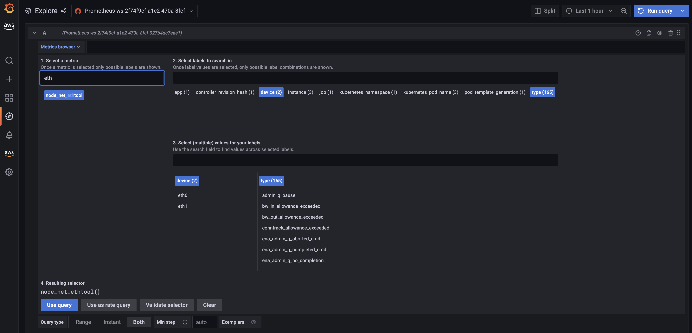
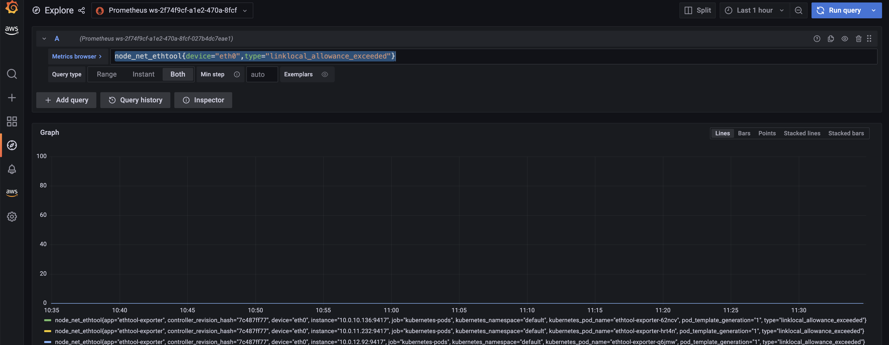
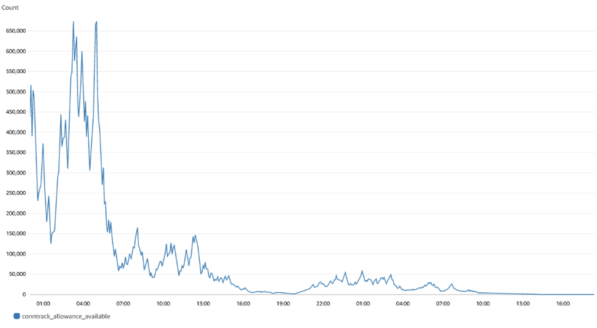

监控 EKS 工作负载的网络性能问题¶
监控 CoreDNS 流量以检测 DNS 节流问题¶
运行 DNS 密集型工作负载有时会由于 DNS 节流而遇到间歇性的 CoreDNS 故障，这可能会影响应用程序，您可能会遇到偶尔的 UnknownHostException 错误。
CoreDNS 的 Deployment 具有反亲和性策略，该策略指示 Kubernetes 调度程序在集群中的不同工作节点上运行 CoreDNS 实例，即它应该避免在同一工作节点上共存副本。这有效地减少了每个网络接口的 DNS 查询数量，因为来自每个副本的流量都通过不同的 ENI 路由。如果您注意到由于每秒 1024 个数据包的限制而导致 DNS 查询被节流，您可以 1) 尝试增加 CoreDNS 副本的数量或 2) 实现 NodeLocal DNSCache。有关更多信息，请参阅 Monitor CoreDNS Metrics。
挑战¶
- 数据包丢弃发生在几秒钟内，很难适当监控这些模式以确定是否实际发生了 DNS 节流。
- DNS 查询在弹性网络接口级别被节流。因此，节流的查询不会出现在查询日志中。
- 流日志不会捕获所有 IP 流量。例如，实例联系 Amazon DNS 服务器时生成的流量。如果您使用自己的 DNS 服务器，则会记录到该 DNS 服务器的所有流量。
解决方案¶
识别工作节点中 DNS 节流问题的一种简单方法是捕获 linklocal_allowance_exceeded 指标。linklocal_allowance_exceeded 是由于到本地代理服务的流量的 PPS 超过网络接口的最大值而导致的丢弃数据包数量。这会影响到 DNS 服务、实例元数据服务和 Amazon 时间同步服务的流量。我们不仅可以实时跟踪此事件，还可以将此指标流式传输到 Amazon Managed Service for Prometheus,并可以在 Amazon Managed Grafana 中将其可视化。
使用 Conntrack 指标监控 DNS 查询延迟¶
另一个可以帮助监控 CoreDNS 节流/查询延迟的指标是 conntrack_allowance_available 和 conntrack_allowance_exceeded。
由于超出跟踪连接的允许值而导致的连接失败可能会比由于超出其他允许值而导致的连接失败产生更大的影响。当依赖 TCP 传输数据时，由于超出 EC2 实例网络允许值(如带宽、PPS 等)而导致的排队或丢弃数据包通常会由于 TCP 的拥塞控制功能而得到较好的处理。受影响的流量将减慢速度，并且丢失的数据包将被重新传输。但是，当实例超出其跟踪连接的允许值时，在关闭一些现有连接以腾出空间供新连接使用之前，将无法建立新连接。
conntrack_allowance_available 和 conntrack_allowance_exceeded 可帮助客户监控每个实例的跟踪连接允许值。这些网络性能指标让客户了解当实例的网络允许值(如网络带宽、每秒数据包数 (PPS)、跟踪连接和链路本地服务访问 (Amazon DNS、实例元数据服务、Amazon 时间同步))被超出时，排队或丢弃的数据包数量。
conntrack_allowance_available 是实例在达到该实例类型的跟踪连接允许值之前可以建立的跟踪连接数(仅支持基于 nitro 的实例)。
conntrack_allowance_exceeded 是由于连接跟踪超过最大值而导致无法建立新连接而丢弃的数据包数。
其他重要的网络性能指标¶
其他重要的网络性能指标包括：
bw_in_allowance_exceeded (该指标的理想值应为零) 是由于入站总带宽超过实例的最大值而导致排队和/或丢弃的数据包数。
bw_out_allowance_exceeded (该指标的理想值应为零) 是由于出站总带宽超过实例的最大值而导致排队和/或丢弃的数据包数。
pps_allowance_exceeded (该指标的理想值应为零) 是由于双向 PPS 超过实例的最大值而导致排队和/或丢弃的数据包数。
捕获指标以监控工作负载的网络性能问题¶
Elastic Network Adapter (ENA) 驱动程序会从启用了该驱动程序的实例中发布上述网络性能指标。所有网络性能指标都可以使用 CloudWatch 代理发布到 CloudWatch。有关更多信息，请参阅博客。
现在让我们捕获上述指标，将它们存储在 Amazon Managed Service for Prometheus 中，并使用 Amazon Managed Grafana 进行可视化。
先决条件¶
- ethtool - 确保工作节点已安装 ethtool
- 在您的 AWS 账户中配置了 AMP 工作区。有关说明，请参阅 AMP 用户指南中的创建工作区。
- Amazon Managed Grafana 工作区
部署 Prometheus ethtool 导出器¶
该部署包含一个 Python 脚本，从 ethtool 中提取信息并以 Prometheus 格式发布。
kubectl apply -f https://raw.githubusercontent.com/Showmax/prometheus-ethtool-exporter/master/deploy/k8s-daemonset.yaml
部署 ADOT 收集器以抓取 ethtool 指标并将其存储在 Amazon Managed Service for Prometheus 工作区中¶
您在其中安装 AWS Distro for OpenTelemetry (ADOT) 的每个集群都必须具有此角色，以授予您的 AWS 服务账户将指标存储到 Amazon Managed Service for Prometheus 的权限。按照以下步骤使用 IRSA 创建并将您的 IAM 角色关联到您的 Amazon EKS 服务账户：
eksctl create iamserviceaccount --name adot-collector --namespace default --cluster <CLUSTER_NAME> --attach-policy-arn arn:aws:iam::aws:policy/AmazonPrometheusRemoteWriteAccess --attach-policy-arn arn:aws:iam::aws:policy/AWSXrayWriteOnlyAccess --attach-policy-arn arn:aws:iam::aws:policy/CloudWatchAgentServerPolicy --region <REGION> --approve --override-existing-serviceaccounts
让我们部署 ADOT 收集器以从 Prometheus ethtool 导出器抓取指标并将其存储在 Amazon Managed Service for Prometheus 中。
以下过程使用了一个示例 YAML 文件，其中 mode 值为 deployment。这是默认模式，并将 ADOT 收集器类似于独立应用程序的方式部署。此配置从示例应用程序接收 OTLP 指标，并从集群上的 pod 抓取 Amazon Managed Service for Prometheus 指标。
curl -o collector-config-amp.yaml https://raw.githubusercontent.com/aws-observability/aws-otel-community/master/sample-configs/operator/collector-config-amp.yaml
在 collector-config-amp.yaml 中，用您自己的值替换以下内容：
* mode: deployment
* serviceAccount: adot-collector
* endpoint: "
一旦部署了 adot 收集器，指标将成功存储在 Amazon Prometheus 中。
在 Amazon Managed Service for Prometheus 中配置警报管理器以发送通知¶
让我们配置记录规则和警报规则以检查到目前为止讨论过的指标。
我们将使用 ACK Controller for Amazon Managed Service for Prometheus 来设置警报和记录规则。
让我们部署 Amazon Managed Service for Prometheus 服务的 ACL 控制器：
export SERVICE=prometheusservice
export RELEASE_VERSION=`curl -sL https://api.github.com/repos/aws-controllers-k8s/$SERVICE-controller/releases/latest | grep '"tag_name":' | cut -d'"' -f4`
export ACK_SYSTEM_NAMESPACE=ack-system
export AWS_REGION=us-east-1
aws ecr-public get-login-password --region us-east-1 | helm registry login --username AWS --password-stdin public.ecr.aws
helm install --create-namespace -n $ACK_SYSTEM_NAMESPACE ack-$SERVICE-controller \
oci://public.ecr.aws/aws-controllers-k8s/$SERVICE-chart --version=$RELEASE_VERSION --set=aws.region=$AWS_REGION
运行该命令后，片刻之后您应该会看到以下消息：
You are now able to create Amazon Managed Service for Prometheus (AMP) resources!
The controller is running in "cluster" mode.
The controller is configured to manage AWS resources in region: "us-east-1"
The ACK controller has been successfully installed and ACK can now be used to provision an Amazon Managed Service for Prometheus workspace.
现在让我们创建一个 yaml 文件来设置警报管理器定义和规则组。
将下面的内容保存为 rulegroup.yaml
apiVersion: prometheusservice.services.k8s.aws/v1alpha1
kind: RuleGroupsNamespace
metadata:
name: default-rule
spec:
workspaceID: <Your WORKSPACE-ID>
name: default-rule
configuration: |
groups:
- name: ppsallowance
rules:
- record: metric:pps_allowance_exceeded
expr: rate(node_net_ethtool{device="eth0",type="pps_allowance_exceeded"}[30s])
- alert: PPSAllowanceExceeded
expr: rate(node_net_ethtool{device="eth0",type="pps_allowance_exceeded"} [30s]) > 0
labels:
severity: critical
annotations:
summary: Connections dropped due to total allowance exceeding for the (instance {{ $labels.instance }})
description: "PPSAllowanceExceeded is greater than 0"
- name: bw_in
rules:
- record: metric:bw_in_allowance_exceeded
expr: rate(node_net_ethtool{device="eth0",type="bw_in_allowance_exceeded"}[30s])
- alert: BWINAllowanceExceeded
expr: rate(node_net_ethtool{device="eth0",type="bw_in_allowance_exceeded"} [30s]) > 0
labels:
severity: critical
annotations:
summary: Connections dropped due to total allowance exceeding for the (instance {{ $labels.instance }})
description: "BWInAllowanceExceeded is greater than 0"
- name: bw_out
rules:
- record: metric:bw_out_allowance_exceeded
expr: rate(node_net_ethtool{device="eth0",type="bw_out_allowance_exceeded"}[30s])
- alert: BWOutAllowanceExceeded
expr: rate(node_net_ethtool{device="eth0",type="bw_out_allowance_exceeded"} [30s]) > 0
labels:
severity: critical
annotations:
summary: Connections dropped due to total allowance exceeding for the (instance {{ $labels.instance }})
description: "BWoutAllowanceExceeded is greater than 0"
- name: conntrack
rules:
- record: metric:conntrack_allowance_exceeded
expr: rate(node_net_ethtool{device="eth0",type="conntrack_allowance_exceeded"}[30s])
- alert: ConntrackAllowanceExceeded
expr: rate(node_net_ethtool{device="eth0",type="conntrack_allowance_exceeded"} [30s]) > 0
labels:
severity: critical
annotations:
summary: Connections dropped due to total allowance exceeding for the (instance {{ $labels.instance }})
description: "ConnTrackAllowanceExceeded is greater than 0"
- name: linklocal
rules:
- record: metric:linklocal_allowance_exceeded
expr: rate(node_net_ethtool{device="eth0",type="linklocal_allowance_exceeded"}[30s])
- alert: LinkLocalAllowanceExceeded
expr: rate(node_net_ethtool{device="eth0",type="linklocal_allowance_exceeded"} [30s]) > 0
labels:
severity: critical
annotations:
summary: Packets dropped due to PPS rate allowance exceeded for local services (instance {{ $labels.instance }})
description: "LinkLocalAllowanceExceeded is greater than 0"
将 Your WORKSPACE-ID 替换为您正在使用的工作区的工作区 ID。
现在让我们配置警报管理器定义。将下面的文件保存为 alertmanager.yaml
apiVersion: prometheusservice.services.k8s.aws/v1alpha1
kind: AlertManagerDefinition
metadata:
name: alert-manager
spec:
workspaceID: <Your WORKSPACE-ID >
configuration: |
alertmanager_config: |
route:
receiver: default_receiver
receivers:
- name: default_receiver
sns_configs:
- topic_arn: TOPIC-ARN
sigv4:
region: REGION
message: |
alert_type: {{ .CommonLabels.alertname }}
event_type: {{ .CommonLabels.event_type }}
将 You WORKSPACE-ID 替换为新工作区的工作区 ID，将 TOPIC-ARN 替换为您希望发送警报的 Amazon Simple Notification Service 主题的 ARN，将 REGION 替换为当前工作负载所在的区域。确保您的工作区有权限向 Amazon SNS 发送消息。
在 Amazon Managed Grafana 中可视化 ethtool 指标¶
让我们在 Amazon Managed Grafana 中可视化指标并构建一个仪表板。按照说明在 Amazon Managed Grafana 控制台中将 Amazon Managed Service for Prometheus 配置为数据源，请参阅将 Amazon Prometheus 添加为数据源。
现在让我们在 Amazon Managed Grafana 中探索指标： 单击探索按钮，搜索 ethtool：

让我们使用查询 rate(node_net_ethtool{device="eth0",type="linklocal_allowance_exceeded"}[30s]) 为 linklocal_allowance_exceeded 指标构建一个仪表板。结果如下：

我们可以清楚地看到没有数据包被丢弃，因为该值为零。
让我们使用查询 rate(node_net_ethtool{device="eth0",type="conntrack_allowance_exceeded"}[30s]) 为 conntrack_allowance_exceeded 指标构建一个仪表板。结果如下：

只要按照此处所述运行 cloudwatch 代理，就可以在 CloudWatch 中可视化 conntrack_allowance_exceeded 指标。在 CloudWatch 中的结果仪表板如下所示：

我们可以清楚地看到没有数据包被丢弃，因为该值为零。如果您使用基于 Nitro 的实例，您可以为 conntrack_allowance_available 创建类似的仪表板，并主动监控您的 EC2 实例中的连接。您还可以通过在 Amazon Managed Grafana 中配置警报来扩展此功能，以向 Slack、SNS、Pagerduty 等发送通知。